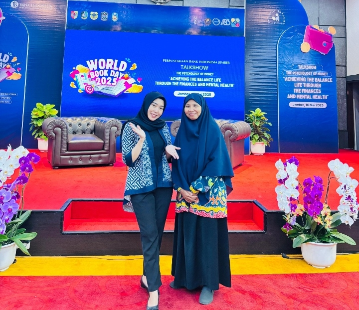
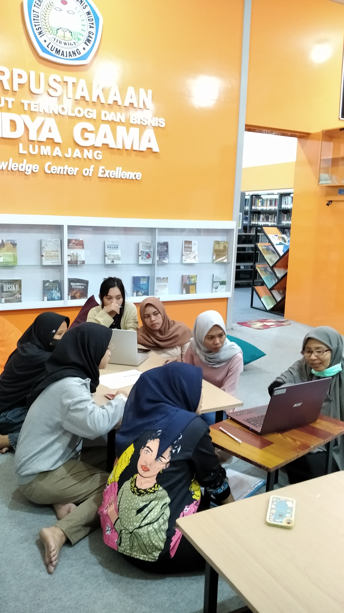

Kegiatan talkshow memperingati hari buku sedunia yang diselenggarakan oleh Perpustakaan Bank Indonesia Cabang Jember

Kunjungan Dinas Perpustakaan Daerah Kabupaten Lumajang ke Rumah Baca Jendela Dunia

Kegiatan belajar Mendeley di Perpustakaan ITB Widya Gama Lumajang